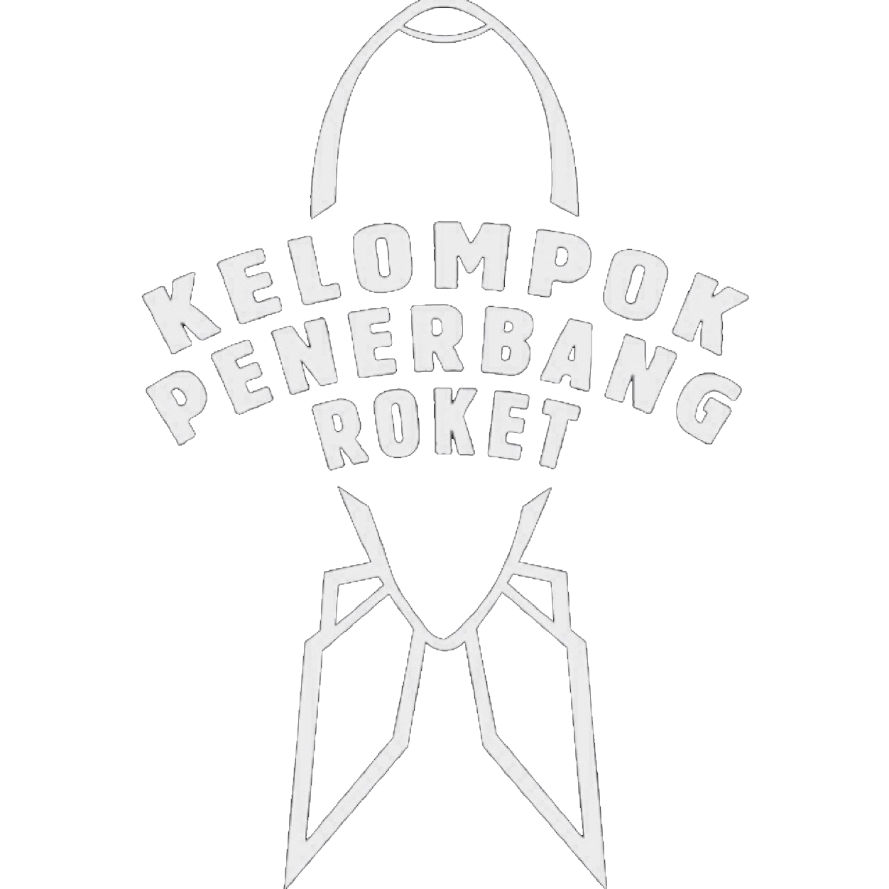

|
Grup musik Rock Indonesia asal Jakarta, Kelompok Penerbang Roket terbentuk pada akhir tahun 2011 dan pertama kali manggung pada November 2013.
Band ini terdiri atas John Paul Patton (Bass/Lead Vocal), Rey Marshall (Guitar/Back Vocal) dan Igusti Vikranta (Drum/Backing Vocal).
Secara genre mereka menggusung Rock dengan pengaruh musik Era 60-an dan 70-an seperti Black Sabbath, Duo Kribo, Aka, Motorhead, Led Zeppelin,
Jimi Hendrix dan musisi lain pada era tersebut. Single pertama yang telah dirilis berjudul “Mati Muda” pada bulan april laku di LP Narkotik Kelas 2 Cipinang.
John Paul Patton alias Coki, Rey Marshall, dan Viki Vikranta kini tengah menjadi perhatian banyak kalangan.
Lewat identitas kolektif Kelompok Penerbang Roket, trio padat energi ini beberapa waktu lalu telah meluncurkan album perdana mereka dengan tajuk Teriakan Bocah.
" Dimana mereka, mereka yang beda "
Kelompok Penerbang Roket - Dimana Merdeka
Kelompok Penerbang Roket atau biasa disingkat KPR mengambil namanya dari lagu yang dipopulerkan Duo Kribo bertajuk ‘Mencarter Roket’
ini tidak bersusah payah untuk membentuk citra, mereka bicara lewat musik sebagai karya. Coba dengar lagu mereka berjudul ‘Mati Muda’ atau ‘Dimana Merdeka’,
kalian akan mengetahui cita-cita mereka tentang musik bersubstansi alkohol, keringat, protes, dan distorsi.
Kelompok Penerbang Roket memainkan musik rock dengan pendekatan era lampau, tepatnya dekade ’70-an.
Jika apa yang muncul di benak adalah satu lagi band yang berupaya terlalu keras untuk menjadi Led Zeppelin dan lalu gagal secara memalukan,
maka Anda keliru berat. Kelompok Penerbang Roket justru mengambil inspirasi dari negeri sendiri, mengusung keberingasan rock,
tak jarang dengan akselerasi maksimum, yang berutang kepada grup musik Indonesia antik macam AKA, Duo Kribo, hingga Panbers.
Sebagai vokalis sekaligus bassist, Coki berteriak lantang sambil konstan mengalirkan dentuman bass penuh irama,
sementara gitaris Rey kerap kali melontarkan suara-suara padat racun candu, dan drummer Viki mendaratkan pukulan demi pukulan ke drum dengan erat serta penuh tenaga.
Anggota Band:
Coki [Bass & Lead Vocal]
Rey [Guitar & Back Vocal]
Viki [Drum & Back Vocal]
|